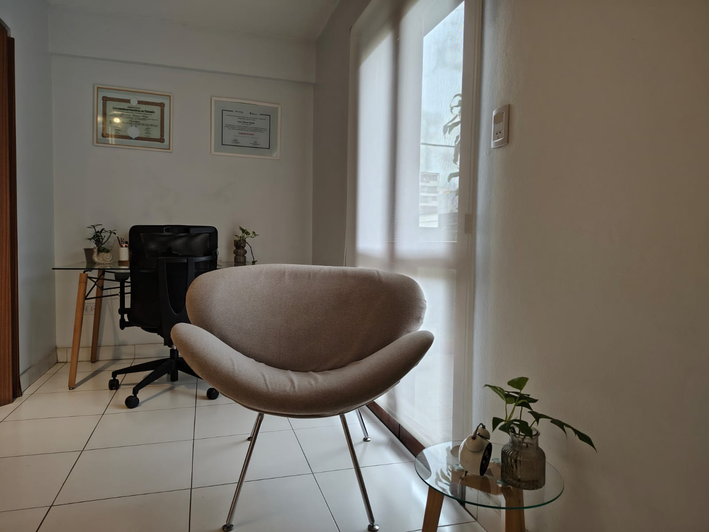

Adolescentes
El trabajo psicoanalítico con adolescentes busca acompañar esta etapa crítica de transición, teniendo en cuenta las particularidades de cada caso.
Psicóloga - M.P. 4079
Psic. Florencia Lazo – Psicóloga - M.P. 4079 - Terapia para adolescentes, jóvenes y adultos.
Reserva una consulta
Soy Psicóloga recibida de la Facultad de Psicología de la Universidad Nacional de Tucumán. Realizo atención psicológica presencial y en línea para adolescentes, jóvenes y adultos. Brindo tratamiento de diversas problemáticas abordadas desde la teoría psicoanalítica.
Tengo un posgrado en Sexología Comunitaria de la Asociación Argentina de Sexología y Educación Sexual. Actualmente estoy haciendo la especialización en Psicología Juridic Forense en la Universidad Nacional de Tucumán
Estoy matriculada en el Colegio de Psicólogos de Tucumán y me mantengo en constante formación para ofrecer un acompañamiento profesional.
Conoce más sobre mi enfoqueEl trabajo psicoanalítico con adolescentes busca acompañar esta etapa crítica de transición, teniendo en cuenta las particularidades de cada caso.
El tratamiento con jóvenes implica un acompañamiento cuidadoso, considerando las singularidades de cada persona, su contexto y motivo de consulta.
El trabajo con adultos está apuntado a la problemática con la cual llega el consultante.
Consultorio ubicado en Barrio Sur, San Miguel de Tucumán. Ambiente cálido y confidencial.
Sesiones online a través de plataformas seguras. El pago se realiza minutos antes de iniciar la sesión.
Los honorarios son conversados y concordados en el primer contacto.
No trabajo con obras sociales. Las sesiones son particulares y se abonan directamente por transferencia bancaria o efectivo.
Es un espacio de acompañamiento para explorar como tu historia de vida y tus deseos inconscientes influyen en tus decisiones y acciones.
Sabrás que es el momento si sientes que tus problemas te sobrepasan, si notas que repites patrones que te hacen daño o, simplemente si tenes el deseo de conocerte mejor para vivir con mayor bienestar. No es necesario esperar a una crisis severa.